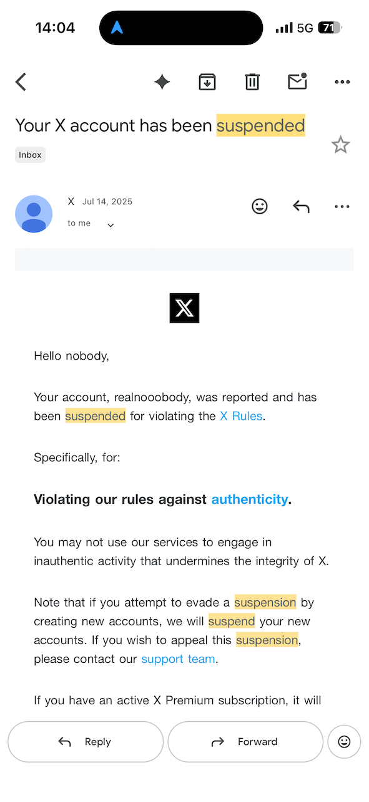
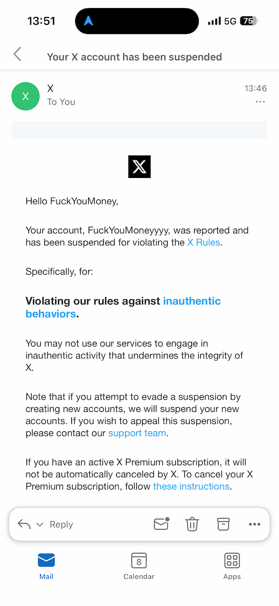

比起主动选择的自由，更让人安心的是被动选择。当选择很多的时候，反而不知道该用哪个平台。当被迫排除掉一些选项后，反而清晰了
2025年 7月 14日，X 第一次封了我的账号：

今天 2026年 4 月 8日，X 封了我的另一个账号：

具体原因不清楚，申诉没有用。我确信自己只是正常在使用，没有刷量或者其他明显异常的行为。而且在 X 上，哪怕是极端或者 18+ 内容，也在允许范围之内，而我的账号也没说什么、什么交互，就反复封我的账号。
小红书也是类似的，之前发过两个交互量比较大的帖子，带一点刻意的错误或者引战一类的内容，流量不错，但是被小红书删帖了。当时就觉得言论管控太严格，不想用了。而到了 X 上，不是言论是否自由的问题，而是不知道因为什么，直接封号，大概率不是因为发言的内容。
微博之前因为网络问题，连续点击了 10 次左右一条帖子的转发按钮，被封了 15 天，说是异常交互。就几乎不想再用了。
总之，微博、小红书、X 等平台，目前注册了新的账号，但是不再发言，只是看一些信息。
那么为什么非要看呢？确实还真不能不看，既然不好用，那不说话就可以了，看还是得看的。小红书上有一些本地化的经验，什么 APP 就架不住大量女性用户的影响力。X 上则是一线新闻，账号还是需要的。所以接下来的策略也很明确，不再这些平台上发言就可以了。